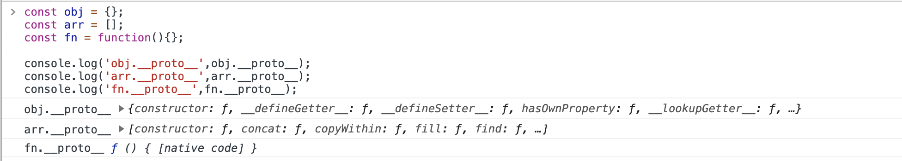
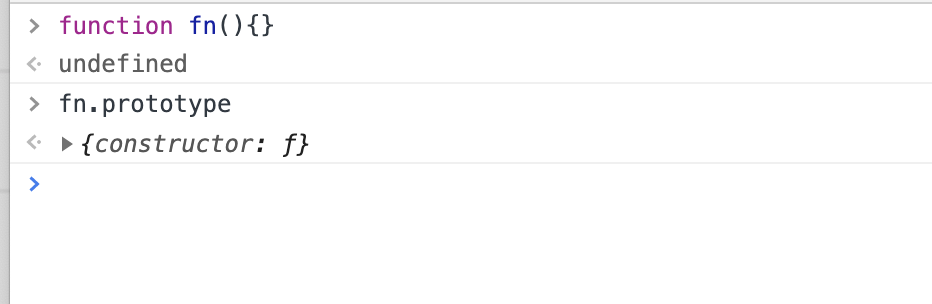
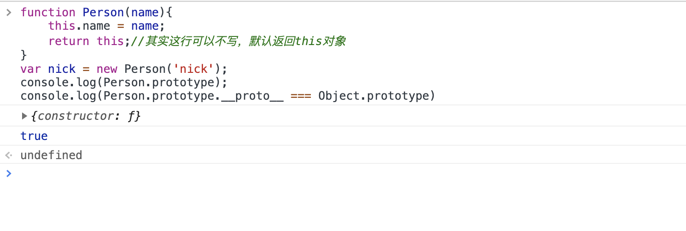
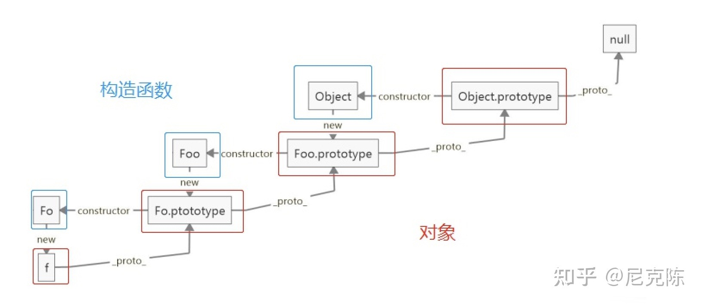

原型链上的那些[学问]
嗯，是的，我底层基础很菜，我又被虐了，所以我决定好好学习，天天向上，努力年底升职加薪，争取早日挣它一个亿。
四个规则
首先了解一下引用类型的四个规则：
1、引用类型，都具有对象特性，即可自由扩展属性(除了”null“以外)。
2、引用类型，都有一个隐式原型__proto__属性，属性值是一个普通的对象。
3、引用类型，隐式原型__proto__的属性值指向它的构造函数的显式原型prototype属性值。
4、当你视图得到一个对象的某个属性时，如果这个对象本身没有这个属性，那么它会去它的隐式原型__proto__(也就是它的构造函数的县式原型prototype)中寻找。
1 | 引用类型：Object、Array、Function、Date、RegExp。 |
下面我们注意验证上面几个规则，就会慢慢地理解原型和原型链。
规则一
引用类型，都具有对象特性，即可自由扩展属性(除了”null“以外)：
1 | const obj = {} |
这个规则应该比较好理解，Date和RegExp也一样，就不赘述了。
规则二
引用类型，都有一个隐式原型__proto__属性，属性值是一个普通的对象；
1 | const obj = {}; |

补充一下：所有函数都有一个显式原型prototype

规则三
引用类型，隐式原型__proto__的属性值指向它的构造函数的显式原型prototype属性值：
1 | const obj = {}; |
规则四
当你试图得到一个对象的某个属性时，如果这个对象本身没有这个属性，那么它会去它的隐式原型__proto__（也就是它的构造函数的显示原型prototype）中寻找：
1 | const obj = { a:1 }; |
首先，obj对象并没有toString属性，之所以能获取到toString属性，是遵循了第四条规则，从它的构造函数Object的prototype里去获取。
一个特例
我想试图推翻上面的规则，看下面这段代码：
1 | function Person(name){ |
按理说，nick是Person构造函数生成的实例，而Person的Prototype并没有toString方法，那么为什么，nick能获取到toString方法？
这里就引出原型链的概念了，nick实例先从自身出发检讨自己，发现并没有toString方法。找不到，就往上走，找Person构造函数的prototype属性，还是没有找到。构造函数的prototype也是一个对象嘛，那对象的构造函数是Object，所以就找到了Object.prototype下的toString方法。

上述寻找的过程就形成了原型链的概念，我理解的原型链就是这样一个过程。也不知道哪个人说过一句，JavaScript里万物皆对象。从上述情况看来，好像是这么个理。
一张图片
用图片描述原型链：（参考大神的图）

最后一个null,设计上是为了避免死循环而设置的，Object.prototype的隐式原型指向null。
一个方法
instanceof运算符用于测试构造函数的prototype属性是否出现在对象原型链中的任何位置。instanceof的简易手写版，如下所示：
1 | // 变量R的原型 存在于 变量L的原型链上 |
我们再来看下面这段代码：
1 | function Foo(name){ |
上述代码判断流程大致如下：
1、f instanceof Foo:f的隐式原型__proto__和Foo.prototype,是相等的，所以返回true。
2、f instanceof Object：f的隐式原型__proto__,和Object.prototype不等，所以继续往上走。f的隐式原型__proto__指向Foo.prototype,所以继续用Foo.prototype.__porto__去对比Object.prototype,这会儿就相等了，因为Foo.prototype就是一个对象。
总结
通过四个特性、一个例子、一张图片、一个方法，大家应该对原型和原型链的关系有个大概得认知。我的认知就是，原型链就是一个过程，原型是原型链这个过程中的一个单位，贯穿整个原型链。